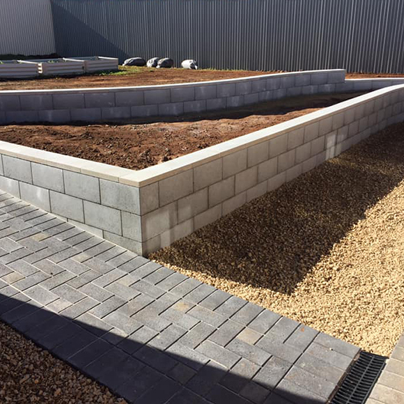

Solving slope challenges, creating level garden spaces, and protecting your property from erosion — we build retaining walls that work hard and look great for decades.
Retaining walls are one of the most common landscaping requirements across Adelaide's southern suburbs. The hilly terrain at Hallett Cove, the sloped blocks throughout Morphett Vale and newer developments, and the challenging ground conditions in Hackham and Reynella all create situations where a well-built retaining wall is the only practical solution to unlocking your outdoor space.
At Maddern's Place, we build retaining walls using concrete block and treated timber — materials proven in Adelaide's climate. Every wall is designed for the specific site conditions, with adequate drainage behind to prevent water pressure building up and causing premature failure. We don't cut corners on the foundation work, because that's what determines whether a wall lasts 5 years or 40.
Our projects range from small garden steps and raised garden bed edging right through to large-scale structural walls on steeply sloped blocks. Whatever the scale, we apply the same level of engineering care and quality workmanship to ensure your wall performs exactly as it should for the long term.

Durable, long-lasting block walls using quality Adbri masonry products. Ideal for larger height changes and situations demanding maximum structural strength and longevity.
Treated pine sleeper walls that are cost-effective and blend naturally with garden surrounds. Suitable for garden bed edging, smaller height changes, and informal terracing.
Proper drainage is critical to retaining wall performance. We install agricultural pipe, drainage aggregate, and geofabric behind every wall to manage moisture and prevent pressure build-up.
Correct footing depth and concrete base ensure your wall handles soil pressure without movement or cracking over time — the most important part of any retaining wall build.
Transforming steeply sloped blocks into usable, flat terraced areas — creating lawn space, garden beds, and outdoor living zones where there previously were none.
Capped wall tops and clean, straight lines make a significant difference to the finished presentation — we take the same care with the appearance as we do with the structural work.
Adelaide's southern suburbs are far from flat. From the coastal cliffs and elevated streets at Hallett Cove to the hillside addresses in Morphett Vale and the undulating terrain throughout Happy Valley and Aberfoyle Park, sloped blocks are a fact of life for many homeowners in this area. Without proper retaining, sloped ground creates cascading problems over time — soil erosion, unusable garden space, and water running toward the house rather than away from it.
We often see properties where retaining attempts have failed — walls built without proper drainage behind them, using materials not suited to Adelaide's clay soil conditions, or without adequate footings for the site's soil pressure. When moisture builds up behind a wall with nowhere to go, the pressure eventually causes bowing or outright failure. Our builds start with the engineering fundamentals that prevent this, because fixing a failed wall costs far more than building a correct one in the first place.
Adelaide's clay soil also expands significantly when wet and contracts in summer heat — a cycle that puts real stress on retaining structures. Our wall designs use appropriate drainage systems that relieve hydrostatic pressure before it builds, and materials that handle this expansion and contraction without cracking or deterioration over the years.
A well-executed retaining wall genuinely adds value to your property. Terracing on a sloped block creates flat, usable lawn space and garden areas — transforming what was an unusable slope into the best part of the backyard. Many of our projects have directly contributed to improved liveability and property value across Adelaide's southern suburbs.
We build retaining walls across Adelaide's southern and coastal suburbs — specialising in sloped and difficult blocks that require local knowledge and proper engineering.